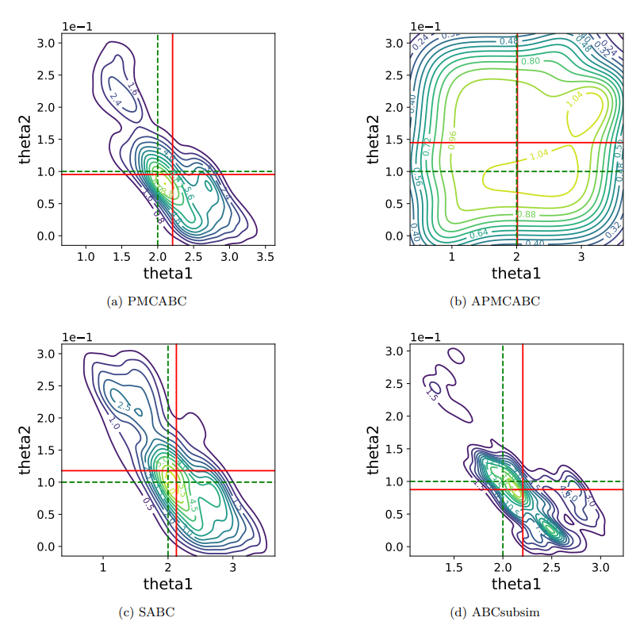

Recent Advances in Approximate Bayesian Inference

In approximate Bayesian computation, likelihood function is intractable and needs to be itself estimated using forward simulations of the statistical model (Beaumont et al., 2002; Marin et al., 2012; Sisson et al., 2019; Martin et al., 2020). Recent years have seen numerous advances in approximate inference methods, which have enabled Bayesian inference in increasingly challenging scenarios involving complex probabilistic models and large datasets.
On the webinar, selected young statisticians will present their recent works on the topic.
When & Where:
- Wednesday, June 25th, 7:00 PT / 10:00 EST / 16:00 CEST
- Online, via Zoom. The registration form is available here).
Speakers:
- Lorenzo Pacchiardi, University of Oxford, United Kingdom
- Emilia Pompe, University of Oxford, United Kingdom
- Łukasz Rajkowski, University of Warsaw, Poland
- Théo Moins, Inria Grenoble Rhône-Alpes, France
Discussant:
- Julyan Arbel, Inria Grenoble Rhône-Alpes, France
The webinar is part of YoungStatS project of the Young Statisticians Europe initiative (FENStatS) supported by the Bernoulli Society for Mathematical Statistics and Probability and the Institute of Mathematical Statistics (IMS).